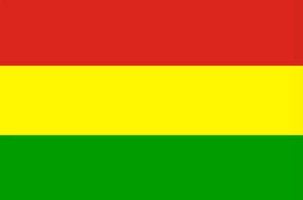

Originators of Reggae

Image Credit: Collider, "Bob Marley One Love Accuracy"
Bob Marley
Bob Marley is widely regarded as the most iconic figure in the history of reggae music. Through his powerful lyrics and the international success of The Wailers, Marley brought reggae to global audiences, blending spiritual themes, social justice, and resistance in his music. His influence helped elevate reggae to a worldwide movement of cultural and political significance.

Image Credit: News Week, "Wailing Away Time: Bob Marley"
The Wailers
As the pioneering group behind some of the most influential reggae music, The Wailers, led by Bob Marley, played a crucial role in reggae’s rise. Their groundbreaking albums and lyrics addressed issues of inequality, freedom, and love, setting the stage for reggae to be recognized as a global voice for social change.

Image Credit: New York Times, "Prince Buster: Trailblazer of Ska"
Prince Buster
Prince Buster was an early innovator in Jamaica’s music scene, helping shape both ska and rocksteady before reggae emerged. His musical experimentation laid the groundwork for the rhythms and styles that would later define reggae, influencing a generation of artists and solidifying his place as a key figure in the genre's origins.
Reggae music was shaped by a diverse group of trailblazers whose contributions laid the foundation for its global influence. From Toots Hibbert and The Maytals coining the term “reggae” with their song "Do the Reggay" to Bob Marley's unparalleled global impact, these pioneers blended innovation with cultural expression. Figures like Jimmy Cliff and Peter Tosh pushed the genre's boundaries, using their music to address themes of resistance, freedom, and justice. Visionaries like Lee "Scratch" Perry introduced experimental production techniques that transformed reggae into a dynamic art form, while early influencers like Prince Buster bridged ska, rocksteady, and reggae. Together, these originators not only defined the sound of reggae but also embedded it with messages of resilience, unity, and empowerment, ensuring its legacy as a cultural and political force worldwide.
Reggae Flag Colors and Their Meanings
Image Credit: CRW Flags, "Rastafarians"